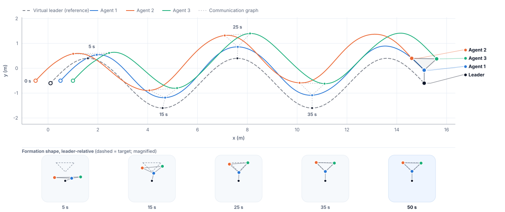

Genuinely Stochastic $H_\infty$ Game
Agents follow Itô SDEs, not ODEs — the coupled HJI equations gain a genuine Itô-correction term that vanishes exactly as the noise does.
1School of Electrical & Electronic Engineering, Hanoi University of Science and Technology (HUST), Vietnam


Overview
We cast distributed formation tracking for multi-agent wheeled mobile robots as a stochastic zero-sum $H_\infty$ game — each agent driven by a genuine Itô SDE rather than an ODE — and solve the resulting coupled stochastic HJI equations online with a critic-only, model-free reinforcement learning scheme. Simulation confirms the guaranteed mean-square-bounded tracking in real time.
Agents follow Itô SDEs, not ODEs — the coupled HJI equations gain a genuine Itô-correction term that vanishes exactly as the noise does.
One critic per agent yields both the policy and the worst-case disturbance in closed form; a historical-data adaptive law replaces persistence of excitation with a checkable rank test.
An off-policy reformulation lumps the unknown input and diffusion channels into the agents' own policies — a change of regressor, not of algorithm.
Tracking and critic-weight errors are provably bounded in the mean-square sense, recovering the deterministic result exactly as $\Sigma_i \to 0$.
MuJoCo visualization of the paper's experiment: the virtual leader (gold beacon) traces the serpentine reference while three follower WMRs self-assemble into the learned rigid formation. White links are the live communication-graph edges.
Method
We cast distributed formation tracking as a stochastic zero-sum game and solve the resulting coupled stochastic HJI equations online with a critic-only integral reinforcement learning (IRL) scheme. Historical data replace persistence-of-excitation requirements, and the controller does not need the drift dynamics of the augmented multi-agent system.

Theorem 1 (Mean-Square UUB)
Under the adaptive law (eq. 35) and the history-stack rank condition — with no further hypothesis on the closed loop — the tracking error $\delta_i$ and critic-weight error $\tilde W_i$ are ultimately uniformly bounded in the mean-square sense, with a bound that reduces exactly to the deterministic pathwise result as $\Sigma_i \to 0$. The learned value, policy and worst-case disturbance approach the Nash equilibrium to within a residual set — $\mathbb{E}\|V_i^* - \hat V_i\|^2 < \epsilon_{V_i}$, $\mathbb{E}\|u_i^* - \hat u_i\|^2 < \epsilon_{u_i}$, $\mathbb{E}\|\vartheta_i^* - \hat\vartheta_i\|^2 < \epsilon_{\vartheta_i}$ — which shrinks as the critic basis is refined, not as the noise vanishes.


Results
The proposed SIRL controller achieves accurate formation tracking for wheeled mobile robots under process noise and adversarial disturbances. Position and orientation errors converge, while critic network weights remain bounded during online learning.


Online Critic Learning
Critic neural-network weights converge online using historical data, without requiring persistence of excitation. Ablation studies quantify the contribution of the reinforcement learning component.


Disabling each component in turn, with topology, reference, noise realisation, and seed held fixed (mean position-error norm $\bar{\|\delta\|}$ over $t>25\,$s; cost $J=\sum_i\int_5^{50}(e_i^TQ_ie_i+u_i^{rT}R_{ii}u_i^r)\,dt$):
| Variant | Cost $J$ | $\bar{\|\delta\|}$ (m) |
|---|---|---|
| Proposed (full) | 4.38 | 0.026 |
| Without Bellman-residual / replay terms | 4.49 | 0.025 |
| Without stabilizing term $\xi_i\Theta_i$ | diverges | — |
| Critic weights frozen at $\hat W_i(0)$ | diverges | — |
| Without learned policy $u_i^r$ | $1.5\times10^{8}$ | 14.11 |
The model-based feedforward alone cannot stabilise the formation (error grows past 14 m without the learned policy); the stabilizing term is what keeps the closed loop out of the divergent region; and the Bellman-residual / experience-replay terms lower the cost by a further $\sim$2.4% at equal tracking accuracy.
Full critic-only IRL (left) versus the fixed feedforward alone, learned policy $u_i^r$ switched off (right). This lightweight demo plant carries safety caps that prevent outright divergence, so what is visible is the milder form of the same effect: a looser, laggier formation without the learned policy.
Model-Free Extension
Reading the stationarity conditions backwards lumps the unknown products $\nabla V_i^Tg_i$ and $\nabla V_i^Tk_i$ into the agent's own policies; the graphical-game cross terms $\nabla V_i^Tg_j$ are identified from data. The learning mechanism — residual, history stack, adaptive law — is untouched.
Not just the drift $f_{ei}$ — the input channels $g_i,k_i$ and the diffusion $\Sigma_i$ are unknown too, and no diffusion parameter is ever identified.
The lumping matches the model-based regressor to $\sim\!10^{-15}$ window by window — exact, not an approximation licensed by small residuals.
$0.89\,$ms per step against $1.72$–$1.81\,$ms model-based, while carrying up to $255$ parameters versus $15$: the extra parameters cost less than the matrix triples they replace.
Theorem 1 carries over unchanged (Corollary 1), and online adaptation still cuts closed-loop cost by $19\%$ against a frozen initialization — with no model at all.


The model-free run of Algorithm 2, with $f_{ei},g_i,k_i,\Sigma_i$ all unavailable to the learner. The unruly opening is the independent exploration the rank condition demands, not instability; probes are withdrawn at $25\,$s, after which the error settles to $0.014$, $0.009$ and $0.006\,$m at $50\,$s.
One caveat worth stating: the actor bases must depend on the measured configuration, not the neighbourhood error alone. For a nonholonomic vehicle the ideal actor carries the heading through $S(\theta_i)$, so the default basis in $\delta_i$ alone leaves relative errors of $24.1\%$, $29.3\%$ and $17.3\%$.
Citation
@misc{thai2026sirl,
title={Stochastic Integral Reinforcement Learning for Distributed $H_\infty$ Optimal Formation Tracking of Multi-Agent Wheeled Mobile Robots},
author={Thai, Khanh and Dao, Huy and Vu, Nga Thi-Thuy},
year={2026}
}